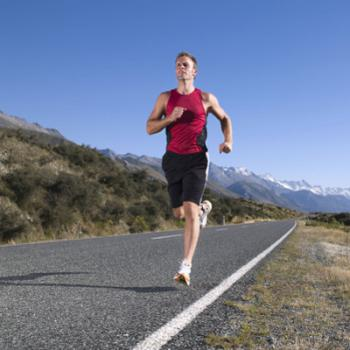

У занятий спортом в зале масса преимуществ: они проводятся в самых комфортных условиях, в любое время года, независимо от погоды и температуры воздуха. Но в последнее время особым спросом стали пользоваться тренировки на улице. У такого направления с каждым годом все больше поклонников, которые отказались от привычных спортзалов в пользу неба, солнца и воздуха.
Мышечная боль, слабость, постоянная жажда и апатия – это далеко не полный перечень симптомов дефицита витамина D. Чтобы его восполнить, недостаточно пересмотреть свой суточный рацион. Необходимо воздействие прямых ультрафиолетовых лучей, с чем могут быть проблемы, если вы мало гуляете или работаете в закрытом помещении. Фитнес на улице под открытым небом – это реальная возможность восполнить дефицит витамина D. При этом вы почувствуете:
В современных залах созданы идеальные условия для занятий спортом. Но уже через несколько месяцев вам может поднадоесть привычный интерьер и антураж. Вы будете вынуждены каждый раз заставлять себя прийти на очередную тренировку. И не исключено, что из-за обыденности и отсутствия новых впечатлений вы даже откажетесь от занятий. Фитнес на природе – это пение птиц, солнечный свет и голубое небо над головой вместо привычного потолка. Такая обстановка улучшает психоэмоциональное состояние, снижает уровень стресса и тревоги. И каждый раз вы будете получать новые яркие впечатления.
Тренировки на природе способствуют общему укреплению организма. Все дело в кислороде, которым обогащен свежий воздух. За счет этого:
{kind=link}
{kind=link}